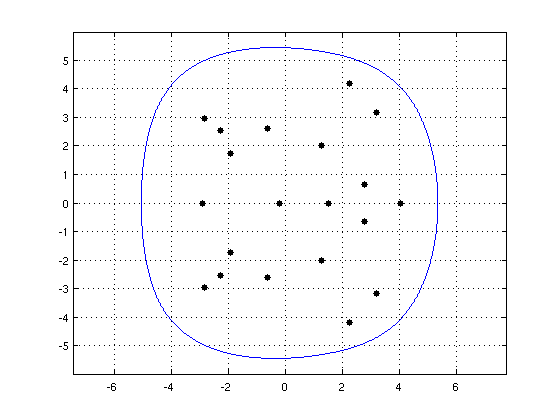
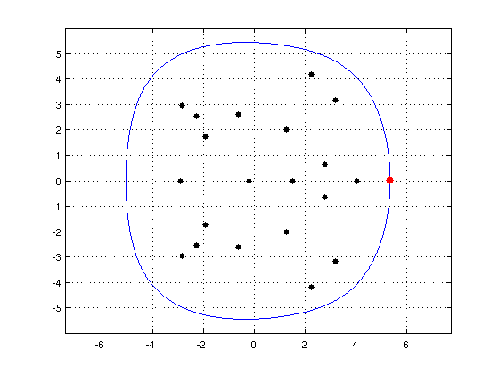
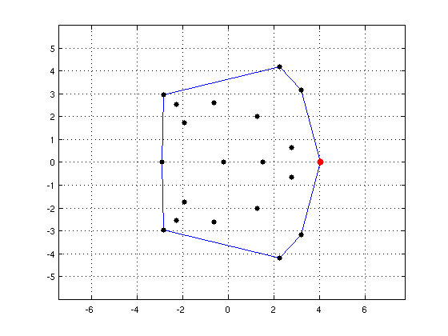
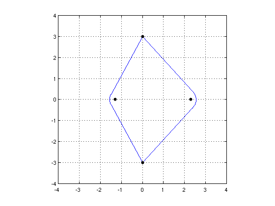

Field of values and numerical abscissa
Nick Trefethen, November 2010
(Chebfun Example linalg/FieldOfValues.m)
If A is a matrix, the field of values F(A) is the nonempty bounded convex set in the complex plane consisting of all the Rayleigh quotients of A, that is, all the numbers q'Aq, where q is a unit vector and q' is its conjugate transpose.
The standard method for computing the field of values numerically is an algorithm due to C. R. Johnson in 1978 based on finding the maximum and minimum eigenvalues of (A+A')/2, then "rotating" this computation around in the complex plane [1]. This algorithm is implemented in the Chebfun command FOV, which is listed at the end of this Example.
Generically the boundary of the field of values is smooth, but it is not always smooth. Chebfun's 'splitting' feature enables FOV to compute this boundary in either situation, smooth or not.
For example, here are the eigenvalues and field of values of a random matrix of dimension 20. This is a case where the boundary is smooth.
randn('seed',1), A = randn(20); LW = 'linewidth'; lw = 1.6; MS = 'markersize'; ms = 18; FA = fov(A); figure, plot(FA,LW,lw), axis equal, grid on ax = axis; axis(1.1*ax) hold on, plot(eig(A),'.k',MS,ms)
The numerical abscissa of A is the maximum real part of its field of values:
[alpha,maxtheta] = max(real(FA))
alpha = 5.340723050262884 maxtheta = 6.283185307178151
Here we add it to the plot as a red dot:
plot(real(FA(maxtheta)),imag(FA(maxtheta)),'.r',MS,24)
 You can also find the numerical abscissa without Chebfun:
alpha = max(eig((A+A')/2))
alpha = 5.340723050262883
Now let's consider a matrix B defined as a diagonal matrix with the same eigenvalues as A. In this case the boundary of the field of values is a polygon:
B = diag(eig(A)); FB = fov(B); hold off, plot(real(FB),imag(FB),'b',LW,lw,'jumpline',{'b',LW,lw}) hold on, plot(eig(B),'.k',MS,ms), axis(1.1*ax), axis equal, grid on [alpha,maxtheta] = max(real(FB)); plot(real(FB(maxtheta)),imag(FB(maxtheta)),'.r',MS,24)
Since the field of values is not smooth, its boundary is a Chebfun with several pieces:
FB
FB =
chebfun column (9 smooth pieces)
interval length endpoint values
[ 0, 0.26] 1 4 4
[ 0.26, 0.73] 1 complex values
[ 0.73, 1.8] 1 complex values
[ 1.8, 3.1] 1 complex values
[ 3.1, 3.1] 1 -2.9 -2.9
[ 3.1, 4.5] 1 complex values
[ 4.5, 5.6] 1 complex values
[ 5.6, 6] 1 complex values
[ 6, 6.3] 1 4 4
Total length = 9 vertical scale = 9.7
Finally, here's an example where the boundary of the field of values mixes smooth curves with straight segments:
C = [0 3 0 0; -3 0 0 0; 0 0 0 3; 0 0 1 1] FC = fov(C); hold off, plot(real(FC),imag(FC),'b',LW,lw,'jumpline',{'b',LW,lw}) axis(4*[-1 1 -1 1]), axis square, grid on hold on, plot(eig(C),'.k',MS,ms)
C =
0 3 0 0
-3 0 0 0
0 0 0 3
0 0 1 1
 Here is a listing of FOV. Note that the numerical computations are carried out in just about 10 lines of code.
type fov
function f = fov(A)
%FOV Field of values (numerical range) of matrix A
% F = FOV(A), where A is a square matrix, returns a chebfun F
% with domain [0 2*pi]. The image F([0 pi]) will be a curve
% describing the boundary of the field of values A, a convex
% region in the complex plane. If A is hermitian, the field of
% values is a real interval, and if A is normal, it is the
% convex hull of the eigenvalues of A.
%
% EXAMPLE.
% A = randn(5);
% F = fov(A);
% hold off, fill(real(F),imag(F),[1 .5 .5]), axis equal
% e = eig(A);
% hold on, plot(real(e),imag(e),'.k','markersize',16)
%
% The numerical abscissa of A is equal to max(real(F)),
% though much better computed as max(real(eig(A+A')))/2
%
% The algorithm use is that of C. R. Johnson, Numerical
% determination of the field of values of a general complex
% matrix, SIAM J. Numer. Anal. 15 (1978), 595-602.
% Copyright 2011 by The University of Oxford and The Chebfun Developers.
% See http://www.maths.ox.ac.uk/chebfun/ for Chebfun information.
f = chebfun(@(theta) z(theta,A),[0, 2*pi],'splitting','on');
function z = z(theta,A)
z = NaN(size(theta));
for j = 1:length(theta)
r = exp(1i*theta(j));
B = r*A;
H = (B+B')/2;
[X,D] = eig(H);
[lam,k] = max(diag(D));
v = X(:,k);
z(j) = v'*A*v/(v'*v);
end
end
end
References:
[1] C. R. Johnson, Numerical determination of the field of values of a general complex matrix, SIAM J. Numer. Anal. 15 (1978), 595-602.
[2] L. N. Trefethen and M. Embree, Spectra and Pseudospectra: The Behavior of Nonnormal Matrices and Operators, Princeton U. Press, 2005, chapter 17 on Numerical range, abscissa, and radius.